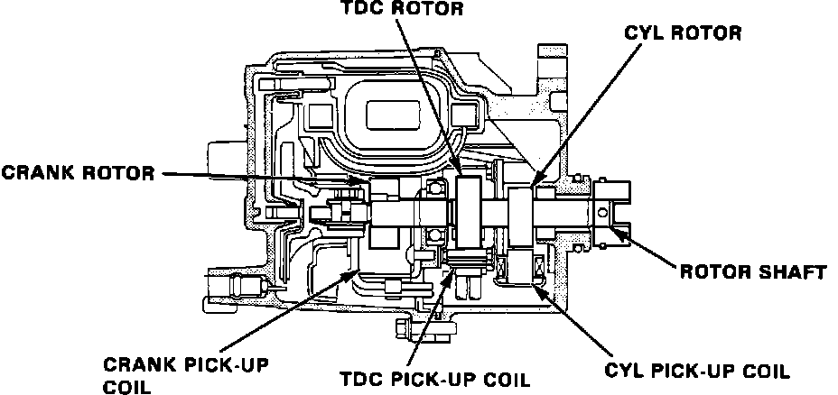

Camshaft Position Sensor: Description and Operation
TDC/CKP/CYL Sensor Operation:

The TDC/CRANK/CYL sensor is mounted inside the distributor. The unit is made up of three separate sensors. All three sensors are pickup coil and reluctor construction. The CRANK portion of the sensor reports crank angle position to the ECU across terminals B10 and B12. The ECU uses the signal to determine fuel injector and ignition timing and also to calculate engine RPM. The TDC portion of the sensor signals the ECU at terminals C3 and C4. The signal is used to determine ignition timing at engine start-up. It's signal is also used as a backup signal in the event the CRANK sensor signal becomes abnormal to permit minimal driving. The CYL portion of the sensor reports to the ECU on terminals C1 and C2. The sensor generates a signal based on the position of the number 1 cylinder for proper timing of the sequential fuel injection system.